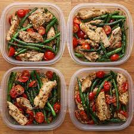

Chicken & Veggies

Weekday Meal-prep Pesto Chicken & Veggies
This is a quick and easy way to have dinners ready for the week. This recipe makes 4 servings
which can be stored in the fridge and reheated through the week.
Ingredients
- 2 tsbp olive oil
- 4 boneless, skinless chicken thighs, sliced
- salt, to taste
- pepper, to taste
- 1 lb green beans (455 g)
- 2 cups cherry tomato (400 g), halved
- 1/2 cup basil pesto (115 g)
Steps
- In a large pan, heat olive oil and add chicken thighs.
- Season with salt and pepper. When the chicken is completely cooked through remove from
pan.
- Slice into strips, and set aside.
- Add green beans and cook until crisp tender.
- Return the chicken to the pan, then add tomatoes and pesto. Stir until full incorporated.
- Serve immediately or divide into 4 food storage containers and store in the refrigerator.
Can be kept refrigerated for up to 4 days.
- Enjoy!
Back to home page